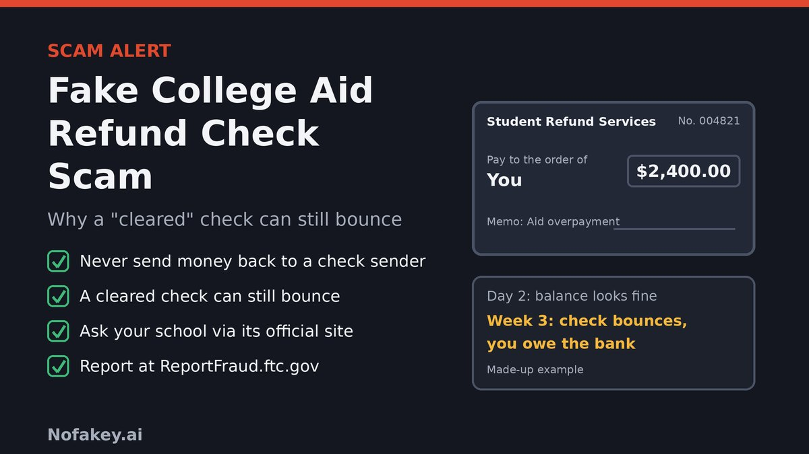

A check arrives in the mail, or a PDF lands in your inbox. It says your school's financial aid office overpaid you by $2,400. All you have to do is deposit it and send back the extra. The money shows up in your account within a day or two, so the check must be real. It is not. Weeks later the bank reverses the deposit, and the money you sent back is gone.
What is the fake financial aid refund check scam?
It is a version of the classic fake check, or overpayment, scam, dressed up in student-aid language. A "financial aid office", "student accounts team" or "refund processor" contacts you by mail, email, text or social media. The story changes, but two things stay the same: there is a check for you to deposit, and a reason why you must send some money out of your account.
It works because refunds are real. Students often do receive refunds when aid exceeds what they owe, and schools pay them in different ways, so an unexpected check can feel plausible. Existing advice tends to cover fake checks in general or scholarship fee scams. This guide focuses on the refund version, and on the question that confuses people most: if the check was fake, why did the bank give me the money?
Fake check examples
These are composite examples written to show the pattern. They are not reports about real people or real schools, and the numbers are made up.
A fake check can look just like this. The FTC says fake checks generally look like real ones, even to bank employees, and some are real checks drawn on the accounts of identity theft victims. So the paper is not what gives it away. The request is.
Example 1: The mailed check with an "overpayment" letter
- Channel
- Priority mail with a letter and a check
Our records show your account was overpaid by $2,400 due to a processing error. Deposit the enclosed check, keep $400 for your trouble and wire the remaining $2,000 to our refund agent today.
Why it's a scam: a real overpayment would be fixed through your school's own accounts office. It would not ask you to wire money to a third party.
Example 2: The emailed or mobile-deposit check
- From
- "Student Accounts Refund Team" <refunds@student-aid-payments.example>
Your financial aid refund check is attached. Deposit it with your banking app. A one-time release fee is required before the funds are final. Pay it with gift cards and send us the numbers.
Why it's a scam: a lookalike sender, a fee to "release" money, and gift cards as payment. Gift cards are a favorite for scammers because they are nearly impossible to trace.
Example 3: The "your grant exceeds tuition" message
- Channel
- Text or social media direct message
Hi, I am your financial aid counselor. Your grant is larger than your tuition, so we are mailing you a check. Please send $500 through a payment app first to cover the disbursement tax, and I will send the check today.
Why it's a scam: you are asked to pay first. Real aid does not require you to pay a "tax" or fee to receive it.
Example 4: The "return the difference today" call
- Channel
- Phone call from a self-described "bursar's office"
"We sent you a refund by mistake. Deposit it, then send the extra back to this account today, before we have to report it to the Department of Education."
Why it's a scam: a threat to rush you, and a personal account to send money to. Hang up and call your school using a number from its official website.
How a fake check looks legitimate, then bounces
The scam rests on a gap between when money appears in your account and when the bank finds out the check is bad. By law, banks have to make deposited funds available quickly. The FTC says this is usually within two days. When the funds show up, the bank may say the check has "cleared", but the FTC is clear that this does not mean it is a good check. Fake checks can take weeks to be discovered and untangled.
| When | What you see | What is really happening |
|---|---|---|
| Day 0 | You deposit the check, in person, by mobile app or at an ATM | The bank starts processing it, and nothing has been confirmed with the account it was drawn on |
| Day 1 or 2 | The money is in your account and the bank says it is available | The law requires quick access to funds. That is not a verification of the check. |
| Day 2 or 3 | You send money back by wire, gift card or payment app as instructed | This is your own money, and it is almost impossible to pull back. The scammer collects it. |
| Days to weeks later | The bank tells you the check was counterfeit or returned | The bank reverses the deposit. The money you sent is gone, and you may owe the difference. |
See what a bounced check does to your balance
Enter some made-up numbers. It runs in your browser only, and nothing leaves the page.
Check-cashing risks
- You repay the bank. When a deposited check is returned, the bank takes the money back out of your account, even if you already spent or sent it. The FTC says you are left paying the money back to the bank.
- You lose what you sent. Wires, gift cards and many payment-app transfers are very hard to reverse.
- Your account can go negative. If the reversal is bigger than your balance, the account can be overdrawn, and fees may follow.
- Your account may be affected. Banks may restrict or close an account that received a fraudulent deposit. Ask your bank how it handles this.
- Mobile and ATM deposits are no safer. The check is still not verified when the funds appear.
- Your information may be exposed. Sharing your account details or a copy of your ID with the "school" can lead to identity theft.
- Even a call to the bank is not enough. A teller or phone line may not be able to tell you the check is good. The safest plan is to not depend on any money from a check you did not expect.
Warning signs of a fake refund check
- It is unexpected, and you did not ask for a refund or check your aid status first.
- You must send some of the money back, or pay a fee, tax or "insurance" before you can keep it.
- It asks for wire transfers, gift cards, crypto or a payment app to a person or company you do not know.
- The amount is more than you expected, with an explanation about an "error".
- The sender pressures you to deposit and send money right away, or threatens to report you.
- It comes through odd channels: social media, text, a personal email address or a mailed envelope that does not match how your school normally pays.
- The payer does not match your school, such as a company or person you have never heard of.
- You are told to keep it secret or not to talk to your school or bank.
How to check whether a refund is real
- Do not deposit it or send anything yet. If you must keep the check, put it aside.
- Check your own account. Sign in to your school's student portal, which you open yourself, and look at your student account balance and aid status. Your financial aid and bursar offices can tell you how refunds are paid.
- Contact your school directly, using a phone number or email from its official website, not from the message or the check.
- Remember the rule: if someone sends you a check and asks you to send money back, it is a scam, even when the paperwork looks perfect.
What did you receive?
Prevention tips
- Never send money to someone who sent you a check. This is the single most useful rule.
- Do not rely on money from a check unless you know and trust the person it came from.
- Check your refund method in your school portal. Choose direct deposit with the school's own system if it offers it.
- Be careful with mobile deposit, and with checks that arrive in an email or as an image.
- Contact the school using official contact details, never details in the message or on the check.
- Be wary of "fees" to release aid. You should not have to pay to receive real financial aid, and Federal Student Aid says help with federal student aid is free.
- Use official sources for aid, such as your school's financial aid office and StudentAid.gov.
- Talk to someone you trust, and to your bank, before you act on a check.
- Tell friends and classmates. Younger adults are often targeted by fake check scams.
What to do if you deposited a fake check or sent money
Act quickly, and do not be embarrassed. These checks are designed to fool people, including bank staff. Recovery is not guaranteed, but speed gives the best chance of limiting the loss.
- Stop sending money. Do not send more, and do not spend what is in your account from the check.
- Call your bank at once, using the number on your card or statement. Explain it was a suspected fake check and ask how to have the deposit reversed and what to do about any money you sent.
- If you sent money, contact the wire service, payment app or gift card company right away and say it was fraud. Ask whether anything can be stopped.
- Report it to the FTC at ReportFraud.ftc.gov. If the check came by mail, also report it to the U.S. Postal Inspection Service.
- Tell your school's financial aid or student accounts office, so it can warn other students and confirm your real account status.
- If you shared bank or ID details, report at IdentityTheft.gov, consider a free credit freeze and check your credit reports at AnnualCreditReport.com.
- Keep evidence: the check, the envelope, messages, emails, phone numbers, receipts and bank statements.
Be wary of anyone who contacts you offering to recover your money for a fee. That is often a second scam.
Where to report
| Who | Use it for | How |
|---|---|---|
| Your bank | Reversing the deposit, blocking transfers and limiting overdrafts | The number on your card or statement |
| Federal Trade Commission | Reporting fake check scams | ReportFraud.ftc.gov |
| FTC IdentityTheft.gov | Identity theft and recovery plans | IdentityTheft.gov |
| U.S. Postal Inspection Service | Fraud that came through the mail | uspis.gov |
| FBI Internet Crime Complaint Center | Online fraud, especially larger losses | ic3.gov |
| State attorney general | Complaints, local alerts and state help | NAAG: find your AG or USA.gov state consumer offices |
| Your school | Confirming your account and warning other students | The financial aid office, via contact details on the school's official website |
Agency programs and contact details change, so check each official site for the latest.
Does it matter which state you live in?
The advice is the same in all 50 states and D.C., because federal rules on check deposits and the federal reporting channels apply everywhere. Your state attorney general's consumer protection office can add local help and alerts. Pick your state to see where to start.
Conclusion
The fake college financial aid refund check scam works because the check looks real and the money appears quickly. The bank has to make funds available fast, so a "cleared" check proves nothing. Never send money back to someone who sent you a check, check your refund through your school's own portal or office, and contact your bank immediately if you think you have deposited a fake. Report it to the FTC even if you lost nothing.
Related scams use the same pressure. Read our guides on the fake student loan settlement offer scam, the fake student loan default warning text scam, the fake identity reverification scam and the fake QR code verification scam.
Got a message or check you are unsure about? Paste the text into our free checker for a quick first read.
Frequently asked questions
What is the fake college financial aid refund check scam?
It is a scam where someone posing as your school's financial aid or student accounts office sends you a check, says you were overpaid or are owed a refund, and asks you to send part of the money back or pay a fee. The check is fake, and when the bank finds out, you owe the bank the money.
Why does a fake check look "cleared" in my account?
Banks are required by law to make deposited funds available quickly, which the FTC says is usually within two days. When the money appears, the bank may say the check has cleared, but that does not mean it is good. The FTC says fake checks can take weeks to be discovered.
Would my school ever ask me to send part of a refund back?
A genuine school will correct an overpayment through its own bursar or student accounts office, for example by adjusting your account or using its official payment portal. It will not ask you to wire money, buy gift cards or use a payment app to send funds to an outside person. If you are unsure, contact the school using a phone number from its official website.
I deposited the check but have not sent any money. What should I do?
Do not send anything and do not spend the money. Contact your bank right away, tell them you think the check is fake, and ask how to have the deposit reversed. Report the scam to the FTC at ReportFraud.ftc.gov, and tell your school's financial aid office.
I already sent money. Can I get it back?
It is not guaranteed, but act immediately. Call your bank, the wire service or payment app, or the gift card company and explain it was a scam. Then report it to the FTC and, if the check came by mail, to the U.S. Postal Inspection Service. Speed matters because wires, gift cards and some payment apps are very hard to reverse.
Who is responsible when the fake check bounces?
You are, in most cases. The FTC says that when the bank discovers the check was fake, you are left paying back the money, which is why you should never send money to someone who sent you a check.
Does it matter which state I live in?
The advice is the same in all 50 states and D.C., because federal rules on check deposits and federal reporting channels apply everywhere. Your state attorney general's consumer protection office can add help and tell you about local alerts.
This guide is general information, not legal or financial advice. Bank policies differ, so ask your own bank how it handles deposits and returned checks.
Got a check or message you want checked?
Run it through the checker